from pandas import (read_csv,
DataFrame,
to_numeric,
cut,
concat,
)Proyecto
- Reviews de aplicaciones de la Google Play Store: https://www.kaggle.com/datasets/lava18/google-play-store-apps
0.1 Context
Los datos de las aplicaciones de Play Store tienen un enorme potencial para impulsar el éxito de las empresas que crean aplicaciones. ¡Se pueden extraer conocimientos prácticos para que los desarrolladores trabajen y capturen el mercado de Android!
0.2 Import Libraries
from numpy import (nan,
log10,
log1p,
array,
argsort,
float64,
)from scipy.stats import stats
from scipy.stats import loguniformfrom sklearn.experimental import enable_iterative_imputer
from sklearn.impute import IterativeImputer
from sklearn.feature_extraction.text import TfidfVectorizer
from sklearn.model_selection import (train_test_split,
cross_val_score,
GridSearchCV,
)
from sklearn.ensemble import (RandomForestRegressor,
GradientBoostingRegressor,
AdaBoostRegressor,
BaggingRegressor,
BaggingClassifier,
RandomForestClassifier,
GradientBoostingClassifier,
)
from sklearn.compose import ColumnTransformer
from sklearn.preprocessing import (LabelEncoder,
OneHotEncoder,
StandardScaler,
OrdinalEncoder,
MinMaxScaler,
QuantileTransformer,
RobustScaler,
)
from sklearn.metrics import (mean_absolute_error,
mean_squared_error,
r2_score,
accuracy_score,
)
from sklearn.pipeline import Pipeline
from sklearn.tree import (DecisionTreeRegressor,
DecisionTreeClassifier,
)
from sklearn.neighbors import KNeighborsRegressorfrom tensorflow.keras.models import Sequential
from tensorflow.keras.layers import (Dense,
Dropout,
SimpleRNN,
LSTM,
)
from keras.optimizers import Adam
from tensorflow.keras.callbacks import EarlyStopping
from tensorflow.keras.regularizers import L2import matplotlib.pyplot as pltfrom seaborn import (countplot,
heatmap,
displot,
kdeplot,
barplot,
scatterplot,
lineplot,
boxplot,
jointplot,
violinplot,
)# Procesamiento de texto
import re
import string
import nltk
from nltk.tokenize import word_tokenize
from nltk.corpus import stopwords
from nltk.corpus import stopwords as nltk_stopwordsimport joblibfrom google.colab import drive
drive.mount('/content/drive')Drive already mounted at /content/drive; to attempt to forcibly remount, call drive.mount("/content/drive", force_remount=True).Importamos las librerías necesarias para este proyecto.
0.3 Pack
!pip install tpot
from tpot import TPOTRegressorRequirement already satisfied: tpot in /usr/local/lib/python3.10/dist-packages (0.12.2)
Requirement already satisfied: numpy>=1.16.3 in /usr/local/lib/python3.10/dist-packages (from tpot) (1.26.4)
Requirement already satisfied: scipy>=1.3.1 in /usr/local/lib/python3.10/dist-packages (from tpot) (1.13.1)
Requirement already satisfied: scikit-learn>=1.4.1 in /usr/local/lib/python3.10/dist-packages (from tpot) (1.5.1)
Requirement already satisfied: deap>=1.2 in /usr/local/lib/python3.10/dist-packages (from tpot) (1.4.1)
Requirement already satisfied: update-checker>=0.16 in /usr/local/lib/python3.10/dist-packages (from tpot) (0.18.0)
Requirement already satisfied: tqdm>=4.36.1 in /usr/local/lib/python3.10/dist-packages (from tpot) (4.66.4)
Requirement already satisfied: stopit>=1.1.1 in /usr/local/lib/python3.10/dist-packages (from tpot) (1.1.2)
Requirement already satisfied: pandas>=0.24.2 in /usr/local/lib/python3.10/dist-packages (from tpot) (2.1.4)
Requirement already satisfied: joblib>=0.13.2 in /usr/local/lib/python3.10/dist-packages (from tpot) (1.4.2)
Requirement already satisfied: xgboost>=1.1.0 in /usr/local/lib/python3.10/dist-packages (from tpot) (2.1.1)
Requirement already satisfied: python-dateutil>=2.8.2 in /usr/local/lib/python3.10/dist-packages (from pandas>=0.24.2->tpot) (2.8.2)
Requirement already satisfied: pytz>=2020.1 in /usr/local/lib/python3.10/dist-packages (from pandas>=0.24.2->tpot) (2024.1)
Requirement already satisfied: tzdata>=2022.1 in /usr/local/lib/python3.10/dist-packages (from pandas>=0.24.2->tpot) (2024.1)
Requirement already satisfied: threadpoolctl>=3.1.0 in /usr/local/lib/python3.10/dist-packages (from scikit-learn>=1.4.1->tpot) (3.5.0)
Requirement already satisfied: requests>=2.3.0 in /usr/local/lib/python3.10/dist-packages (from update-checker>=0.16->tpot) (2.31.0)
Requirement already satisfied: nvidia-nccl-cu12 in /usr/local/lib/python3.10/dist-packages (from xgboost>=1.1.0->tpot) (2.22.3)
Requirement already satisfied: six>=1.5 in /usr/local/lib/python3.10/dist-packages (from python-dateutil>=2.8.2->pandas>=0.24.2->tpot) (1.16.0)
Requirement already satisfied: charset-normalizer<4,>=2 in /usr/local/lib/python3.10/dist-packages (from requests>=2.3.0->update-checker>=0.16->tpot) (3.3.2)
Requirement already satisfied: idna<4,>=2.5 in /usr/local/lib/python3.10/dist-packages (from requests>=2.3.0->update-checker>=0.16->tpot) (3.7)
Requirement already satisfied: urllib3<3,>=1.21.1 in /usr/local/lib/python3.10/dist-packages (from requests>=2.3.0->update-checker>=0.16->tpot) (2.0.7)
Requirement already satisfied: certifi>=2017.4.17 in /usr/local/lib/python3.10/dist-packages (from requests>=2.3.0->update-checker>=0.16->tpot) (2024.7.4)!pip install scikit_optimize
from skopt import BayesSearchCV
from skopt.space import Real, Categorical, IntegerCollecting scikit_optimize
Downloading scikit_optimize-0.10.2-py2.py3-none-any.whl.metadata (9.7 kB)
Requirement already satisfied: joblib>=0.11 in /usr/local/lib/python3.10/dist-packages (from scikit_optimize) (1.4.2)
Collecting pyaml>=16.9 (from scikit_optimize)
Downloading pyaml-24.7.0-py3-none-any.whl.metadata (11 kB)
Requirement already satisfied: numpy>=1.20.3 in /usr/local/lib/python3.10/dist-packages (from scikit_optimize) (1.26.4)
Requirement already satisfied: scipy>=1.1.0 in /usr/local/lib/python3.10/dist-packages (from scikit_optimize) (1.13.1)
Requirement already satisfied: scikit-learn>=1.0.0 in /usr/local/lib/python3.10/dist-packages (from scikit_optimize) (1.5.1)
Requirement already satisfied: packaging>=21.3 in /usr/local/lib/python3.10/dist-packages (from scikit_optimize) (24.1)
Requirement already satisfied: PyYAML in /usr/local/lib/python3.10/dist-packages (from pyaml>=16.9->scikit_optimize) (6.0.1)
Requirement already satisfied: threadpoolctl>=3.1.0 in /usr/local/lib/python3.10/dist-packages (from scikit-learn>=1.0.0->scikit_optimize) (3.5.0)
Downloading scikit_optimize-0.10.2-py2.py3-none-any.whl (107 kB)
━━━━━━━━━━━━━━━━━━━━━━━━━━━━━━━━━━━━━━━━ 107.8/107.8 kB 1.1 MB/s eta 0:00:00
Downloading pyaml-24.7.0-py3-none-any.whl (24 kB)
Installing collected packages: pyaml, scikit_optimize
Successfully installed pyaml-24.7.0 scikit_optimize-0.10.2nltk.download('stopwords')
nltk.download('popular')[nltk_data] Downloading package stopwords to /root/nltk_data...
[nltk_data] Unzipping corpora/stopwords.zip.
[nltk_data] Downloading collection 'popular'
[nltk_data] |
[nltk_data] | Downloading package cmudict to /root/nltk_data...
[nltk_data] | Unzipping corpora/cmudict.zip.
[nltk_data] | Downloading package gazetteers to /root/nltk_data...
[nltk_data] | Unzipping corpora/gazetteers.zip.
[nltk_data] | Downloading package genesis to /root/nltk_data...
[nltk_data] | Unzipping corpora/genesis.zip.
[nltk_data] | Downloading package gutenberg to /root/nltk_data...
[nltk_data] | Unzipping corpora/gutenberg.zip.
[nltk_data] | Downloading package inaugural to /root/nltk_data...
[nltk_data] | Unzipping corpora/inaugural.zip.
[nltk_data] | Downloading package movie_reviews to
[nltk_data] | /root/nltk_data...
[nltk_data] | Unzipping corpora/movie_reviews.zip.
[nltk_data] | Downloading package names to /root/nltk_data...
[nltk_data] | Unzipping corpora/names.zip.
[nltk_data] | Downloading package shakespeare to /root/nltk_data...
[nltk_data] | Unzipping corpora/shakespeare.zip.
[nltk_data] | Downloading package stopwords to /root/nltk_data...
[nltk_data] | Package stopwords is already up-to-date!
[nltk_data] | Downloading package treebank to /root/nltk_data...
[nltk_data] | Unzipping corpora/treebank.zip.
[nltk_data] | Downloading package twitter_samples to
[nltk_data] | /root/nltk_data...
[nltk_data] | Unzipping corpora/twitter_samples.zip.
[nltk_data] | Downloading package omw to /root/nltk_data...
[nltk_data] | Downloading package omw-1.4 to /root/nltk_data...
[nltk_data] | Downloading package wordnet to /root/nltk_data...
[nltk_data] | Downloading package wordnet2021 to /root/nltk_data...
[nltk_data] | Downloading package wordnet31 to /root/nltk_data...
[nltk_data] | Downloading package wordnet_ic to /root/nltk_data...
[nltk_data] | Unzipping corpora/wordnet_ic.zip.
[nltk_data] | Downloading package words to /root/nltk_data...
[nltk_data] | Unzipping corpora/words.zip.
[nltk_data] | Downloading package maxent_ne_chunker to
[nltk_data] | /root/nltk_data...
[nltk_data] | Unzipping chunkers/maxent_ne_chunker.zip.
[nltk_data] | Downloading package punkt to /root/nltk_data...
[nltk_data] | Unzipping tokenizers/punkt.zip.
[nltk_data] | Downloading package snowball_data to
[nltk_data] | /root/nltk_data...
[nltk_data] | Downloading package averaged_perceptron_tagger to
[nltk_data] | /root/nltk_data...
[nltk_data] | Unzipping taggers/averaged_perceptron_tagger.zip.
[nltk_data] |
[nltk_data] Done downloading collection popularTruePaquetes necesarios para la limpieza del texto, debemos descargarlos para previamente usarlos.
0.4 Load Data
df = read_csv('/content/drive/MyDrive/Colab Notebooks/proyectos/googleplaystore.csv')
#df = df.sample(frac=0.40)El metodo sample lo use para hacer las pruebas y errores de mi modelo, ya que es un dataframe grande, para que no fuese tan largos las esperas y los ajustes necesarios
df.shape(10841, 13)df.head()| App | Category | Rating | Reviews | Size | Installs | Type | Price | Content Rating | Genres | Last Updated | Current Ver | Android Ver | |
|---|---|---|---|---|---|---|---|---|---|---|---|---|---|
| 0 | Photo Editor & Candy Camera & Grid & ScrapBook | ART_AND_DESIGN | 4.1 | 159 | 19M | 10,000+ | Free | 0 | Everyone | Art & Design | January 7, 2018 | 1.0.0 | 4.0.3 and up |
| 1 | Coloring book moana | ART_AND_DESIGN | 3.9 | 967 | 14M | 500,000+ | Free | 0 | Everyone | Art & Design;Pretend Play | January 15, 2018 | 2.0.0 | 4.0.3 and up |
| 2 | U Launcher Lite – FREE Live Cool Themes, Hide ... | ART_AND_DESIGN | 4.7 | 87510 | 8.7M | 5,000,000+ | Free | 0 | Everyone | Art & Design | August 1, 2018 | 1.2.4 | 4.0.3 and up |
| 3 | Sketch - Draw & Paint | ART_AND_DESIGN | 4.5 | 215644 | 25M | 50,000,000+ | Free | 0 | Teen | Art & Design | June 8, 2018 | Varies with device | 4.2 and up |
| 4 | Pixel Draw - Number Art Coloring Book | ART_AND_DESIGN | 4.3 | 967 | 2.8M | 100,000+ | Free | 0 | Everyone | Art & Design;Creativity | June 20, 2018 | 1.1 | 4.4 and up |
Descargamos el dataset que usaremos y lo subimos a nuestro Drive, cargamos el dataset en la variable df e imprimimos las primeras 5 muestras
0.5 EDA
df.info()<class 'pandas.core.frame.DataFrame'>
RangeIndex: 10841 entries, 0 to 10840
Data columns (total 13 columns):
# Column Non-Null Count Dtype
--- ------ -------------- -----
0 App 10841 non-null object
1 Category 10841 non-null object
2 Rating 9367 non-null float64
3 Reviews 10841 non-null object
4 Size 10841 non-null object
5 Installs 10841 non-null object
6 Type 10840 non-null object
7 Price 10841 non-null object
8 Content Rating 10840 non-null object
9 Genres 10841 non-null object
10 Last Updated 10841 non-null object
11 Current Ver 10833 non-null object
12 Android Ver 10838 non-null object
dtypes: float64(1), object(12)
memory usage: 1.1+ MBImprimimos la información de nuestro dataset, contiene 13 columnas con un total de 10841 muestras. A primera vista observamos el tipo de dato de cada columna y los valores faltantes.
df.describe().T| count | mean | std | min | 25% | 50% | 75% | max | |
|---|---|---|---|---|---|---|---|---|
| Rating | 9367.0 | 4.193338 | 0.537431 | 1.0 | 4.0 | 4.3 | 4.5 | 19.0 |
En este caso quise mostrar las estadísticas descriptivas del data set, solo se muestra la de Rating porque por ahora es la única columna numérica
df.duplicated().sum()483La sumatoria total de los valores duplicados en nuestro dataset
df.isnull().sum()App 0
Category 0
Rating 1474
Reviews 0
Size 0
Installs 0
Type 1
Price 0
Content Rating 1
Genres 0
Last Updated 0
Current Ver 8
Android Ver 3
dtype: int64nan = (df.isnull().sum() / len(df)) * 100
print(nan)App 0.000000
Category 0.000000
Rating 13.596532
Reviews 0.000000
Size 0.000000
Installs 0.000000
Type 0.009224
Price 0.000000
Content Rating 0.009224
Genres 0.000000
Last Updated 0.000000
Current Ver 0.073794
Android Ver 0.027673
dtype: float64plt.figure(figsize=(12, 5))
nan.plot(kind='bar', color='skyblue')
plt.title('Proporción de valores NaN por columna')
plt.xlabel('Columnas')
plt.ylabel('Porcentaje de valores NaN')
plt.xticks(rotation=45, ha='right')
plt.tight_layout()
plt.show()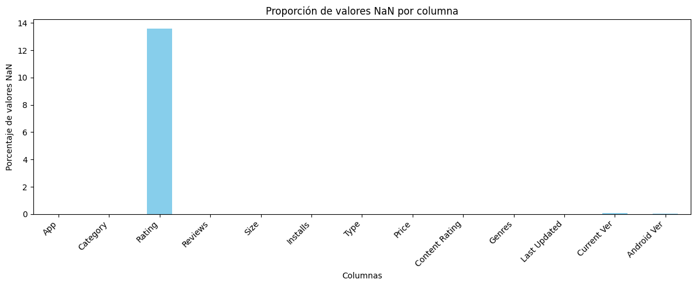
Observamosos los valores faltantes del dataset, primeramente el total de valores por cada columna, y luego la completitud de cada columna. La columna Rating cuenta con un numero considerable de valores faltantes, el resto se puede solucionar eliminandolos
-
En términos generales, se suelen considerar los siguientes grados de impacto, dependiendo del porcentaje de valores faltantes (dumb rules):
- Menos de 1%: Trivial (no relevante)
- 1-5%: Manejable
- 5-15%: Manejable mediante métodos sofisticados
- Más de 15%: Crítico, con impacto severo en cualquier tipo de interpretación
0.6 Data Engineering
Haremos un recorrido por las columnas de nuestro dataset, llevaremos a cabo la limpieza de cada una, dejarlas aptas para posteriormente pueda ser utilizado para nuestro modelo.
0.6.1 Clean Reviews column
df['Reviews'].dtypesdtype('O')df['Reviews'].nunique()6002df['Reviews'].isnull().sum()0#def clean_numeric(num):
# if isinstance(num, str):
# if 'M' in num:
# num = num.replace('M', '000')
# num = float(num)
# return num
# return float(num)
#df['Reviews'] = df['Reviews'].apply(clean_numeric)
#df['Reviews'] = df['Reviews'].astype(float)Al tratar de convertir esta columna a numerico me arrojaba un error por contener valores string, analizando la columna encontre una el cual contenia una M, así que implemente una función para limpiar dicha letra de los valores y así transformar, luego me di cuenta que era todo una muestra que estaba erronea, y la localice mediante el codigo a continuación.
#df[df['Reviews'].str.contains('M', na=False)]['Reviews'].unique()
df[~df.Reviews.str.isnumeric()]| App | Category | Rating | Reviews | Size | Installs | Type | Price | Content Rating | Genres | Last Updated | Current Ver | Android Ver | |
|---|---|---|---|---|---|---|---|---|---|---|---|---|---|
| 10472 | Life Made WI-Fi Touchscreen Photo Frame | 1.9 | 19.0 | 3.0M | 1,000+ | Free | 0 | Everyone | NaN | February 11, 2018 | 1.0.19 | 4.0 and up | NaN |
df=df.drop(df.index[10472])
df['Reviews'] = to_numeric(df['Reviews'])Anteriormente habia localizado dicha muestra que no correspondia, y interprete mal ese valor pensando que era M de milloes, pero viendo puntualmente la muestra podemos ver que esta mal ingresada ya que el valor de size y reviews estan intercambiadas, por ser una muestras solamente procederemos a eliminar.
0.6.2 Clean Size column
df['Size'].unique()array(['19M', '14M', '8.7M', '25M', '2.8M', '5.6M', '29M', '33M', '3.1M',
'28M', '12M', '20M', '21M', '37M', '2.7M', '5.5M', '17M', '39M',
'31M', '4.2M', '7.0M', '23M', '6.0M', '6.1M', '4.6M', '9.2M',
'5.2M', '11M', '24M', 'Varies with device', '9.4M', '15M', '10M',
'1.2M', '26M', '8.0M', '7.9M', '56M', '57M', '35M', '54M', '201k',
'3.6M', '5.7M', '8.6M', '2.4M', '27M', '2.5M', '16M', '3.4M',
'8.9M', '3.9M', '2.9M', '38M', '32M', '5.4M', '18M', '1.1M',
'2.2M', '4.5M', '9.8M', '52M', '9.0M', '6.7M', '30M', '2.6M',
'7.1M', '3.7M', '22M', '7.4M', '6.4M', '3.2M', '8.2M', '9.9M',
'4.9M', '9.5M', '5.0M', '5.9M', '13M', '73M', '6.8M', '3.5M',
'4.0M', '2.3M', '7.2M', '2.1M', '42M', '7.3M', '9.1M', '55M',
'23k', '6.5M', '1.5M', '7.5M', '51M', '41M', '48M', '8.5M', '46M',
'8.3M', '4.3M', '4.7M', '3.3M', '40M', '7.8M', '8.8M', '6.6M',
'5.1M', '61M', '66M', '79k', '8.4M', '118k', '44M', '695k', '1.6M',
'6.2M', '18k', '53M', '1.4M', '3.0M', '5.8M', '3.8M', '9.6M',
'45M', '63M', '49M', '77M', '4.4M', '4.8M', '70M', '6.9M', '9.3M',
'10.0M', '8.1M', '36M', '84M', '97M', '2.0M', '1.9M', '1.8M',
'5.3M', '47M', '556k', '526k', '76M', '7.6M', '59M', '9.7M', '78M',
'72M', '43M', '7.7M', '6.3M', '334k', '34M', '93M', '65M', '79M',
'100M', '58M', '50M', '68M', '64M', '67M', '60M', '94M', '232k',
'99M', '624k', '95M', '8.5k', '41k', '292k', '11k', '80M', '1.7M',
'74M', '62M', '69M', '75M', '98M', '85M', '82M', '96M', '87M',
'71M', '86M', '91M', '81M', '92M', '83M', '88M', '704k', '862k',
'899k', '378k', '266k', '375k', '1.3M', '975k', '980k', '4.1M',
'89M', '696k', '544k', '525k', '920k', '779k', '853k', '720k',
'713k', '772k', '318k', '58k', '241k', '196k', '857k', '51k',
'953k', '865k', '251k', '930k', '540k', '313k', '746k', '203k',
'26k', '314k', '239k', '371k', '220k', '730k', '756k', '91k',
'293k', '17k', '74k', '14k', '317k', '78k', '924k', '902k', '818k',
'81k', '939k', '169k', '45k', '475k', '965k', '90M', '545k', '61k',
'283k', '655k', '714k', '93k', '872k', '121k', '322k', '1.0M',
'976k', '172k', '238k', '549k', '206k', '954k', '444k', '717k',
'210k', '609k', '308k', '705k', '306k', '904k', '473k', '175k',
'350k', '383k', '454k', '421k', '70k', '812k', '442k', '842k',
'417k', '412k', '459k', '478k', '335k', '782k', '721k', '430k',
'429k', '192k', '200k', '460k', '728k', '496k', '816k', '414k',
'506k', '887k', '613k', '243k', '569k', '778k', '683k', '592k',
'319k', '186k', '840k', '647k', '191k', '373k', '437k', '598k',
'716k', '585k', '982k', '222k', '219k', '55k', '948k', '323k',
'691k', '511k', '951k', '963k', '25k', '554k', '351k', '27k',
'82k', '208k', '913k', '514k', '551k', '29k', '103k', '898k',
'743k', '116k', '153k', '209k', '353k', '499k', '173k', '597k',
'809k', '122k', '411k', '400k', '801k', '787k', '237k', '50k',
'643k', '986k', '97k', '516k', '837k', '780k', '961k', '269k',
'20k', '498k', '600k', '749k', '642k', '881k', '72k', '656k',
'601k', '221k', '228k', '108k', '940k', '176k', '33k', '663k',
'34k', '942k', '259k', '164k', '458k', '245k', '629k', '28k',
'288k', '775k', '785k', '636k', '916k', '994k', '309k', '485k',
'914k', '903k', '608k', '500k', '54k', '562k', '847k', '957k',
'688k', '811k', '270k', '48k', '329k', '523k', '921k', '874k',
'981k', '784k', '280k', '24k', '518k', '754k', '892k', '154k',
'860k', '364k', '387k', '626k', '161k', '879k', '39k', '970k',
'170k', '141k', '160k', '144k', '143k', '190k', '376k', '193k',
'246k', '73k', '658k', '992k', '253k', '420k', '404k', '470k',
'226k', '240k', '89k', '234k', '257k', '861k', '467k', '157k',
'44k', '676k', '67k', '552k', '885k', '1020k', '582k', '619k'],
dtype=object)df['Size'].value_counts()['Varies with device']1695df['Size'] = df['Size'].str.replace(',', '')def convert_to_MBs(size):
if isinstance(size, str):
if '+' in size:
return float(size.replace('+',''))
elif 'k' in size:
return float(size.replace('k',''))
elif 'M' in size:
return float(size.replace('M', '')) * 1024
elif 'Varies with device' in size:
return nan
return (size)
df['Size'] = df['Size'].apply(convert_to_MBs) # Aplicamos la funcion
df.rename(columns={'Size': 'Size_in_MBs'}, inplace=True) # Renombramos la columna
df['Size_in_MBs'] = to_numeric(df['Size_in_MBs'], errors='coerce') # Convertimos a numericoEn la columna hay varios tipos de valores, tamaños en Kb, en Mb y otra Varies with device que no aporta nada, al igual que un caracter especial + , mediante esta función limpiaremos dicha columna eliminando los caracteres, para no perder valor de los tamaños llevaremos todo a Mb, aplicamos la función, renombramos la columna y convertimos a numerico
df['Size_in_MBs'] = df['Size_in_MBs'].apply(lambda x: x * 1000 if x < 10 else x)
df['Size_in_MBs']=df['Size_in_MBs']/1000
df['Size_in_MBs'] = round(df['Size_in_MBs'], 2)Acá con lambda los valores menores a 10 los lo multiplicamos por mil y los mayores quedan igual, de manera que podamos interpretar las muestras correctamente entre mb y kb, por ultimo dividimos entre mil y el resultado lo quisiera con dos decimales asi que le aplico un round
0.6.3 Clean Installs column
df['Installs'].unique()array(['10,000+', '500,000+', '5,000,000+', '50,000,000+', '100,000+',
'50,000+', '1,000,000+', '10,000,000+', '5,000+', '100,000,000+',
'1,000,000,000+', '1,000+', '500,000,000+', '50+', '100+', '500+',
'10+', '1+', '5+', '0+', '0'], dtype=object)df['Installs'].value_counts().head()Installs
1,000,000+ 1579
10,000,000+ 1252
100,000+ 1169
10,000+ 1054
1,000+ 907
Name: count, dtype: int64df['Installs'] = df['Installs'].astype(str)
df['Installs'] = df['Installs'].apply(lambda x: x.replace('Free', '0'))
df['Installs'] = df['Installs'].str.replace(',', '')
df['Installs'] = df['Installs'].apply(lambda x: x.replace('+', ''))
df['Installs'] = df['Installs'].astype(int)df['Installs'].value_counts().head()Installs
1000000 1579
10000000 1252
100000 1169
10000 1054
1000 907
Name: count, dtype: int64En esta columna en la cual contiene el total de instalaciones de cada aplicación, contiene un carácter especial que es (+), igualmente el tipo de dato en object, observamos los valores únicos de la columna y contiene uno que es (free), con una función limpiaremos de carácteres especiales y dicho valor free que sea reemplazado por un 0 y cambiamos el tipo de dato a numérico.
0.6.4 Clean Price column
df['Price'].unique()array(['0', '$4.99', '$3.99', '$6.99', '$1.49', '$2.99', '$7.99', '$5.99',
'$3.49', '$1.99', '$9.99', '$7.49', '$0.99', '$9.00', '$5.49',
'$10.00', '$24.99', '$11.99', '$79.99', '$16.99', '$14.99',
'$1.00', '$29.99', '$12.99', '$2.49', '$10.99', '$1.50', '$19.99',
'$15.99', '$33.99', '$74.99', '$39.99', '$3.95', '$4.49', '$1.70',
'$8.99', '$2.00', '$3.88', '$25.99', '$399.99', '$17.99',
'$400.00', '$3.02', '$1.76', '$4.84', '$4.77', '$1.61', '$2.50',
'$1.59', '$6.49', '$1.29', '$5.00', '$13.99', '$299.99', '$379.99',
'$37.99', '$18.99', '$389.99', '$19.90', '$8.49', '$1.75',
'$14.00', '$4.85', '$46.99', '$109.99', '$154.99', '$3.08',
'$2.59', '$4.80', '$1.96', '$19.40', '$3.90', '$4.59', '$15.46',
'$3.04', '$4.29', '$2.60', '$3.28', '$4.60', '$28.99', '$2.95',
'$2.90', '$1.97', '$200.00', '$89.99', '$2.56', '$30.99', '$3.61',
'$394.99', '$1.26', '$1.20', '$1.04'], dtype=object)df['Price'].value_counts().head(10)Price
0 10040
$0.99 148
$2.99 129
$1.99 73
$4.99 72
$3.99 63
$1.49 46
$5.99 30
$2.49 26
$9.99 21
Name: count, dtype: int64#df['Price'].value_counts()['Everyone']df['Price'] = df['Price'].apply(lambda x: x.replace('$', ""))
df['Price'] = df['Price'].apply(lambda x: x.replace('Everyone', "0"))df['Price'] = to_numeric(df['Price'])df['Price'].value_counts().head()Price
0.00 10040
0.99 148
2.99 129
1.99 73
4.99 72
Name: count, dtype: int64Esta columna representa el precio de cada aplicaciòn, podemos ver que cuenta con un caracter especial ($), cuenta con 93 valores unicos y uno en especial llamado (everyone). Reemplazamos el caracter especial por un espacio al igual que el valor (everyone) por un espacio. Posterior a eso cambiamos el tipo de dato a numerico.
0.6.5 Clean text
def clean_text(text):
# Convertir el texto a minúsculas
text = text.lower()
# Eliminar stopwords
stopwords_list = stopwords.words('english')
STOPWORDS = set(stopwords_list)
text = " ".join([word for word in text.split() if word not in STOPWORDS])
# Eliminar direcciones de correo electrónico
text = re.sub('@[^\s]+', ' ', text)
# Eliminar URLs
text = re.sub('((www\.[^\s]+)|(https?://[^\s]+))', ' ', text)
# Eliminar números
text = re.sub('[0-9]+', ' ', text)
# Eliminar puntuaciones
translator = str.maketrans(' ' , ' ', string.punctuation)
text = text.translate(translator)
text = text.replace('-', ' ')
return textdf['Category'] = df['Category'].apply(lambda text: clean_text(text))
df['App'] = df['App'].apply(lambda text: clean_text(text))
df['Genres'] = df['Genres'].apply(lambda text: clean_text(text))0.6.6 Correlation matrix
df['Reviews_per_Install'] = df['Reviews'] / df['Installs']Por alta relación entre los features de reseñas y instalaciones creare un feature nuevo para ver si nos arroja algo interesante.
numeric_cols = ['Rating', 'Reviews' ,'Size_in_MBs', 'Installs', 'Price', 'Reviews_per_Install']Selecionaremos solamente los features numericos para aplicarle una correlación
plt.figure(figsize=(10,6))
plt.title("Correlation of Seven Columns")
heatmap(df[numeric_cols].corr(),annot=True)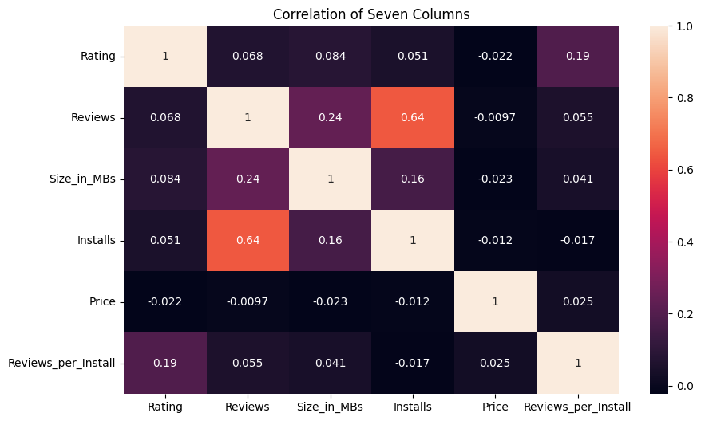
Mediante esta grafica de matriz de correlación, observamos dos columnas con alta correlación, es logico ya que mientras mas instalaciones tenga una aplicación, mas reseñas tendra, seguido una pequeña relación con el tamaño de la aplicación, las otros features mantienen una relación muy pequeña. Luego de crear un nuevo feature nos arroja una leve relación con nuestra variable objetivo.
0.6.7 Head
df.info()<class 'pandas.core.frame.DataFrame'>
Index: 10840 entries, 0 to 10840
Data columns (total 14 columns):
# Column Non-Null Count Dtype
--- ------ -------------- -----
0 App 10840 non-null object
1 Category 10840 non-null object
2 Rating 9366 non-null float64
3 Reviews 10840 non-null int64
4 Size_in_MBs 9145 non-null float64
5 Installs 10840 non-null int64
6 Type 10839 non-null object
7 Price 10840 non-null float64
8 Content Rating 10840 non-null object
9 Genres 10840 non-null object
10 Last Updated 10840 non-null object
11 Current Ver 10832 non-null object
12 Android Ver 10838 non-null object
13 Reviews_per_Install 10825 non-null float64
dtypes: float64(4), int64(2), object(8)
memory usage: 1.2+ MBdf.head()| App | Category | Rating | Reviews | Size_in_MBs | Installs | Type | Price | Content Rating | Genres | Last Updated | Current Ver | Android Ver | Reviews_per_Install | |
|---|---|---|---|---|---|---|---|---|---|---|---|---|---|---|
| 0 | photo editor candy camera grid scrapbook | artanddesign | 4.1 | 159 | 19.46 | 10000 | Free | 0.0 | Everyone | art design | January 7, 2018 | 1.0.0 | 4.0.3 and up | 0.015900 |
| 1 | coloring book moana | artanddesign | 3.9 | 967 | 14.34 | 500000 | Free | 0.0 | Everyone | art designpretend play | January 15, 2018 | 2.0.0 | 4.0.3 and up | 0.001934 |
| 2 | u launcher lite – free live cool themes hide apps | artanddesign | 4.7 | 87510 | 8.91 | 5000000 | Free | 0.0 | Everyone | art design | August 1, 2018 | 1.2.4 | 4.0.3 and up | 0.017502 |
| 3 | sketch draw paint | artanddesign | 4.5 | 215644 | 25.60 | 50000000 | Free | 0.0 | Teen | art design | June 8, 2018 | Varies with device | 4.2 and up | 0.004313 |
| 4 | pixel draw number art coloring book | artanddesign | 4.3 | 967 | 2.87 | 100000 | Free | 0.0 | Everyone | art designcreativity | June 20, 2018 | 1.1 | 4.4 and up | 0.009670 |
Asì va quedando nuestro dataset luego de la limpieza
0.6.8 Treatment missing values
df.isnull().sum() / len(df) * 100App 0.000000
Category 0.000000
Rating 13.597786
Reviews 0.000000
Size_in_MBs 15.636531
Installs 0.000000
Type 0.009225
Price 0.000000
Content Rating 0.000000
Genres 0.000000
Last Updated 0.000000
Current Ver 0.073801
Android Ver 0.018450
Reviews_per_Install 0.138376
dtype: float64Tenemos dos columnas las cuales cuentan con gran cantidad de valores nulos, la columna Size in Kbs antes de limpiarla no contaba con valores nulos, en este caso tenia un valor de nombre Varies with device el cual no aporta nada de información, ademas que se repite 1694 veces, lo que hace el 15%; llevaremos a cabo una imputación a dicha columna y eliminaremos la del resto. La columna Rating cuenta con mas del 13% de valores nulos, como cuenta con una gran porcentaje de valores nulos estaba pensando en tratarla igual que la columna Size, pero en este caso al ser una columna de satisfacción no podria suponer dichas valoraciones, así que en este caso para dicha columna eliminare los valores nulos.
df.dropna(subset=['Rating', 'Type'],inplace=True)df.isnull().sum() / len(df) * 100App 0.000000
Category 0.000000
Rating 0.000000
Reviews 0.000000
Size_in_MBs 17.478112
Installs 0.000000
Type 0.000000
Price 0.000000
Content Rating 0.000000
Genres 0.000000
Last Updated 0.000000
Current Ver 0.042708
Android Ver 0.021354
Reviews_per_Install 0.000000
dtype: float640.6.9 Duplicated Data
df.shape(9366, 14)df.duplicated().sum()474Observamos los valores duplicados en nuestro dataset, por ahora contamos con 316 valores duplicados
df.drop_duplicates(inplace=True)df.duplicated().sum()0df.shape(8892, 14)Borramos los valores duplicados para que no interfieran con los analisis posteriores de nuestro dataset, y luego imprimimos nuestro el shape
0.6.10 Imputer Size_in_MBs column
imputer = IterativeImputer(estimator=RandomForestRegressor(),
max_iter=100,
random_state=760)
df['Size_in_MBs'] = imputer.fit_transform(df[['Size_in_MBs']])Estuve investigando metodos de imputaciòn para columnas las cuales contengan una cantidad considerable de valores nulos, en las librerias de sklearn encontre un método de imputación avanzado que utiliza un modelo de aprendizaje automático para estimar los valores faltantes en un conjunto de datos. Como estimador usaremos bosque aleatorio de regresion, ajustamos con la columna la cual vamos a imputar y transformamos dicha columna.
df.isnull().sum() / len(df) * 100App 0.000000
Category 0.000000
Rating 0.000000
Reviews 0.000000
Size_in_MBs 0.000000
Installs 0.000000
Type 0.000000
Price 0.000000
Content Rating 0.000000
Genres 0.000000
Last Updated 0.000000
Current Ver 0.044984
Android Ver 0.022492
Reviews_per_Install 0.000000
dtype: float64Columna del tamaño de la app totalmemte limpio.
0.6.11 Imputer Reviews_per_Install column
impute = IterativeImputer(estimator=RandomForestRegressor(),
max_iter=100,
random_state=760)
df['Reviews_per_Install'] = impute.fit_transform(df[['Reviews_per_Install']])Aplicaremos la misma función de imputación pero esta vez para el nuevo feature. Al crear el nuevo feature, al contener valores en 0 en dichos feature, al dividirlas arroja un Nan
0.7 Univariate analysis
df.shape, df.columns((8892, 14),
Index(['App', 'Category', 'Rating', 'Reviews', 'Size_in_MBs', 'Installs',
'Type', 'Price', 'Content Rating', 'Genres', 'Last Updated',
'Current Ver', 'Android Ver', 'Reviews_per_Install'],
dtype='object'))A continuación analizaremos las columnas para conocerlas mejor y que información podemos sacar de ellas.
0.7.1 App column
df['App'].nunique()8121Mostramos los valores unicos de esta columna, la cual contiene 8434 valores unicos
df['App'].dtypedtype('O')Observamos el tipo de dato de la columna, que en este caso es de tipo Object
plt.hist(df['App'].value_counts(), bins=20)
plt.xlabel('Frecuencia de aparición')
plt.ylabel('Número de aplicaciones')
plt.title('Distribución de frecuencias de las aplicaciones')
plt.show()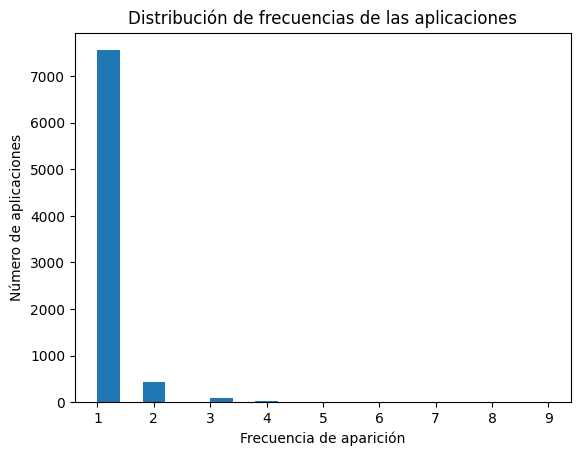
df['App'].value_counts().head(10).plot(kind='bar')
plt.xlabel('Aplicación')
plt.ylabel('Frecuencia de aparición')
plt.title('Top 10 aplicaciones más comunes')
plt.show()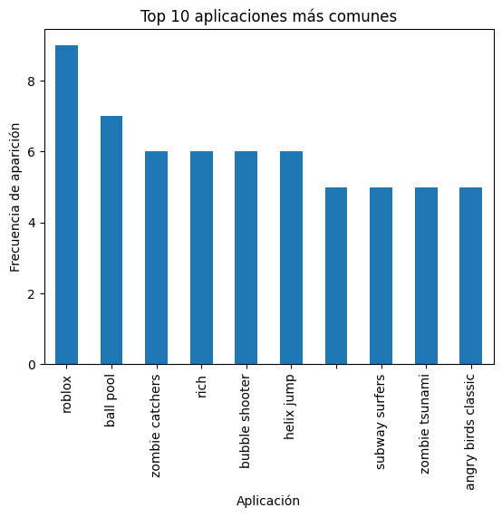
Mediante un histograma y un grafico de barras, podemos observar las primeras 10 muestras, de las aplicaciones las cuales se repiten más, dejando a ROBLOX de primero, siendo la aplicación que mas se repite.
0.7.2 Category column
plt.figure(figsize=(10,4))
df['Category'].value_counts().head(15).plot(kind='bar')
plt.xlabel('Categoría')
plt.ylabel('Cantidad de aplicaciones')
plt.title('Cantidad de aplicaciones por categoría')
plt.xticks(rotation=90)
plt.show()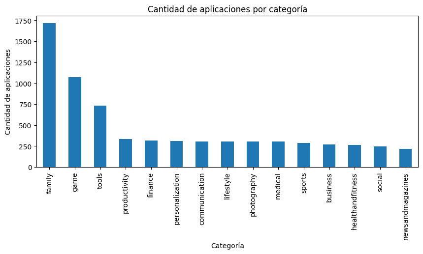
Acá en la columna Categoria y mediante una grafica de barras, podemos observar 10 muestras, las cuales representan las 10 categorias de aplicaciones que mas veces se repiten, siendo la categoria familia la categoria que mas veces se repite en nuestro conjunto de datos.
0.7.3 Rating column
df['Rating'].describe()count 8892.000000
mean 4.187877
std 0.522377
min 1.000000
25% 4.000000
50% 4.300000
75% 4.500000
max 5.000000
Name: Rating, dtype: float64Mostramos las estadisticas descriptivas de nuestra columna Calificación, vemos la media de casi 4.2, eso es bueno ya que nos indica que mayormente las valoraciones de las aplicaciones son buenas; el puntaje minimo de 1 y la maxima de 5, los cuartiles igualmente nos indica valores sobre 4, que nos rectifica dicha hipotesis sobre las valoraciones
plt.figure(figsize=(10,4))
plt.hist(df['Rating'], bins=20, edgecolor='black')
plt.xlabel('Calificación')
plt.ylabel('Frecuencia')
plt.title('Distribución de calificación de aplicaciones')
plt.show()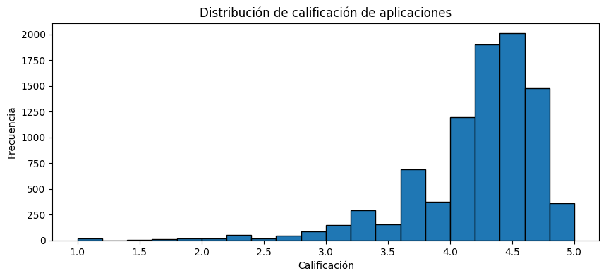
plt.figure(figsize=(10,4))
kdeplot(df['Rating'],color='blue', fill=True)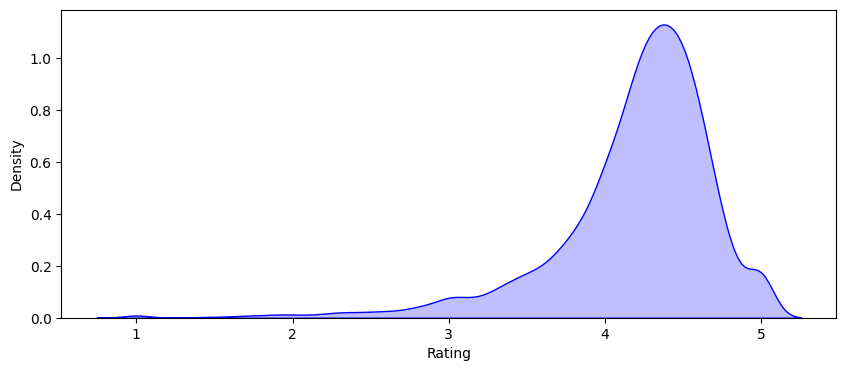
Mediante la grafica de densidad y el histograma, podemos observar que la concentración de valores se encuentra sobre la calificación 4, tal cual lo que nos indico las estadisticas descriptivas
0.7.4 Reviews column
df['Reviews'].describe()count 8.892000e+03
mean 4.727764e+05
std 2.905052e+06
min 1.000000e+00
25% 1.640000e+02
50% 4.714500e+03
75% 7.126675e+04
max 7.815831e+07
Name: Reviews, dtype: float64Observamos las primeras 10 muestras de nuestra columna Reseñas y tambien las estadisticas descriptivas; Nos muestra el total de observaciones de la columna, la desviación estandar que en este caso hay una gran dispersión de valores con respecto a la media, la media nos arroja un 4% de reseñas por aplicación, siendo un maximo de casi 7.8% de reseñas por aplicación, al igual que la minima de 0 reseñas.
plt.figure(figsize=(10,4))
plt.hist(df['Reviews'], bins=20, edgecolor='black')
plt.xlabel('Reseñas')
plt.ylabel('Frequencia')
plt.title('Distribución de reseñas')
plt.show()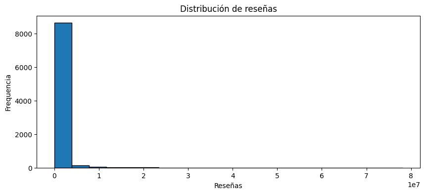
displot(data=df, x='Reviews', kind="kde")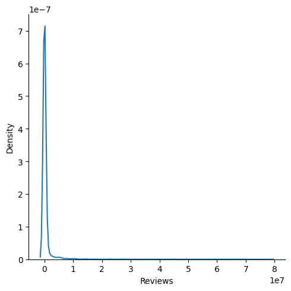
Las ultimas dos graficas no nos arroja mucho, se entiende que la gran mayoria de las aplicaciones cuentan con una reseña, y la pequeña minoria cuentan con 2 o mas reseñas.
displot(data=df, x=log10(df['Reviews']), kind="kde")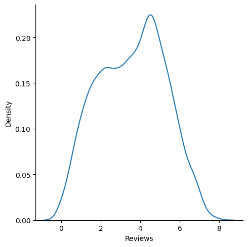
Podemos ver en las graficas una notación científica, eso significa que la densidad de los datos de una region es muy baja y no nos deja apreciar bien la grafica; para observarlo mejor, de la libreria de Numpy usaremos la función log10 la cual nos arroja el logaritmo en base 10 de la matriz de entrada, seria como escalar dicha region de datos para poder observarlo mejor; Y ahora si podemos ver la grafica de densidad mucho mejor, que abala un poco lo que nos arrojaba las estadisticas descriptivas.
0.7.5 Size column
df['Size_in_MBs'].describe()count 8892.000000
mean 23.294395
std 21.926279
min 0.010000
25% 6.450000
50% 20.480000
75% 27.650000
max 102.400000
Name: Size_in_MBs, dtype: float64Ahora las estadisticas descriptivas de nuestra columna de Size_in_MBs, que seria el tamaño de cada aplicación, el tamaño promedio de las aplicaciones esta en 23 Mb, contiene una alta dispersión con respecto a la media, ya que el tamaño minimo es de unos pocos kb y el mayor esta en mayor a 100 mb, y los rangos intercuartilicos nos indica que el 75% de los valores estan bajo los 27 Mb
plt.figure(figsize=(10,4))
plt.hist(df['Size_in_MBs'], bins=20, edgecolor='black')
plt.xlabel('Tamaño en Mbs')
plt.ylabel('Frecuencia')
plt.title('Distribución del tamaño de aplicaciones')
plt.show()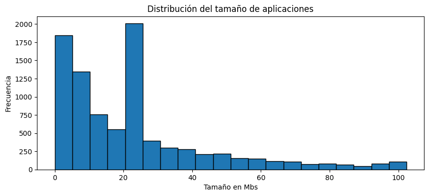
Mediante un histograma nos ayuda a entender más lo ultimo mencionado, la concentración de muestras estan bajo los 30 mb, luego son pocos lo que superan dicho tamaño.
0.7.6 Installs column
df['Installs'].describe()count 8.892000e+03
mean 1.648965e+07
std 8.637600e+07
min 1.000000e+00
25% 1.000000e+04
50% 5.000000e+05
75% 5.000000e+06
max 1.000000e+09
Name: Installs, dtype: float64Veremos las estadisticas descriptivas de nuestra columna Instalaciones; Viendo la desviación estandar la cual es bastante alta, nos indica una alta dispersión de valores con respecto a la media, es decir, el valor maximo esta muy alejado de los rangos intercuartilicos que son notablemente mas bajos
plt.figure(figsize=(10,4))
plt.hist(df['Installs'], bins=20, edgecolor='black')
plt.xlabel('Instalaciones')
plt.ylabel('Frequencia')
plt.title('Frecuencia de instalaciones')
plt.show()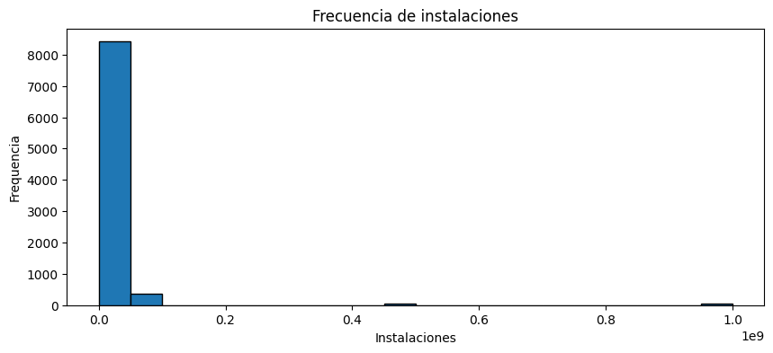
displot(data=df, x=log10(df['Installs']), kind="kde")
plt.show()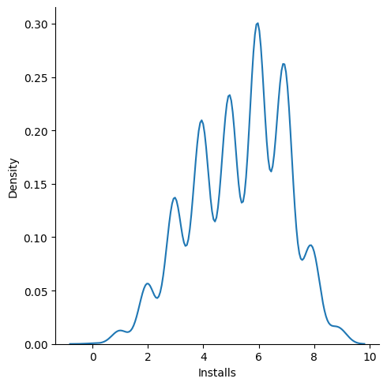
No se puede apreciar bien en el histograma por su gran cantidad de muestras altas, le aplicaremos una grafica de densidad al logaritmo base 10 para estandarizar los valores, logramos ver que fluctua mucho. la mayoría de las aplicaciones tiene un número moderado de instalaciones, pero hay algunas aplicaciones muy populares que elevan significativamente el promedio.
0.7.7 Type column
df['Type'].value_counts()Type
Free 8279
Paid 613
Name: count, dtype: int64En este caso observaremos la columna Tipo que se refiere al tipo de aplicación, si es una aplicación Paga o Gratuita; Es una columna desbalanceada pero esperable, ya que la mayoria de las aplicaciones son gratuitas.
plt.figure(figsize=(6,4))
df['Type'].value_counts().plot(kind='bar', color=['blue', 'red'])
plt.xlabel('Tipo de aplicación')
plt.ylabel('Cantidad de aplicaciones')
plt.title('Cantidad de aplicaciones Gratuitas vs. Pagas')
plt.xticks(rotation=0)
plt.show()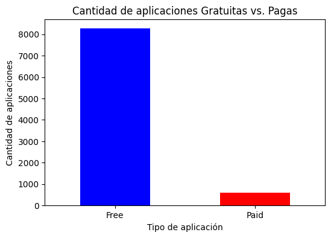
Acá en esta grafica de barras observamos que sobre las 8mil observaciones son gratuitas frente a la pequeña minoria de aplicaciones pagas.
labels = 'Free', 'paid'
fig, ax = plt.subplots()
ax.pie(df['Type'].value_counts(),
labels=labels,
shadow=True,
autopct='%1.1f%%')([<matplotlib.patches.Wedge at 0x7b94d74b9390>,
<matplotlib.patches.Wedge at 0x7b94d74b9210>],
[Text(-1.0743027712831958, 0.23637587781591737, 'Free'),
Text(1.0743027712831958, -0.2363758778159175, 'paid')],
[Text(-0.585983329790834, 0.12893229699050038, '93.1%'),
Text(0.585983329790834, -0.12893229699050043, '6.9%')])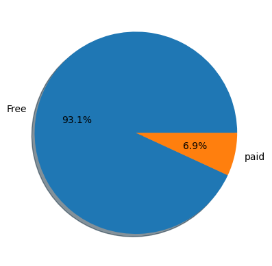
Y esta grafica de pastel, con 92.2% las aplicaciones pagas frente al 7.8% de aplicaciones pagas.
0.7.8 Price column
df['Price'].describe()count 8892.000000
mean 0.963155
std 16.189341
min 0.000000
25% 0.000000
50% 0.000000
75% 0.000000
max 400.000000
Name: Price, dtype: float64La mayoria de las aplicaciones son gratuitas, así que viendo las estadisticas descriptivas podemos ver una alta desviación estandar con respecto a la media, es logico ya que el valor maximo se aleja muchisimo de los rangos intercuartilicos
displot(df['Price'], kde=True)
plt.title('Distribución de precios')
plt.xlabel('precios en $')
plt.ylabel('Frecuencia')
plt.show()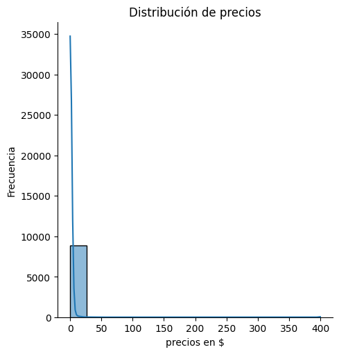
displot(log10(df['Price']), kde=True)
plt.title('Distribución de precios')
plt.xlabel('precios en $')
plt.ylabel('Frecuencia')
plt.show()/usr/local/lib/python3.10/dist-packages/pandas/core/arraylike.py:396: RuntimeWarning: divide by zero encountered in log10
result = getattr(ufunc, method)(*inputs, **kwargs)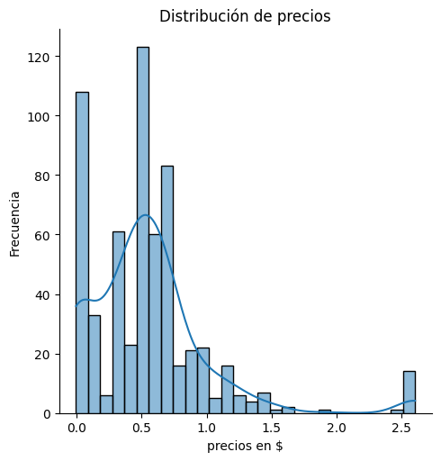
Podemos observar que en su mayoria las aplicaciones son gratuitas, la media nos indica que las aplicaciones pagas son casi de 1 dolar, nos indica que la mayor concentración se encutra bajo 1 dolar
0.7.9 Genres column
df['Genres'].value_counts().head(10).plot(kind='bar')
plt.xlabel('Generos')
plt.ylabel('Frecuencia de aparición')
plt.title('Top 10 generos más comunes')
plt.show()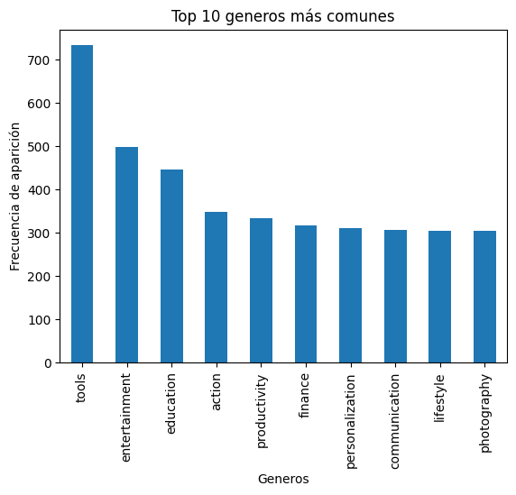
Luego esta grafica de barras, mostramos la frecuencia la cual cada elemento de la columna Genero se repite más, con más de 700 coincidencias es Tools de primero, seguido de Entertainment con un poco mas de 500 coincidencias.
# Graficar
plt.figure(figsize=(8,8))
df['Genres'].value_counts().plot(kind='pie', autopct='%1.1f%%', startangle=140)
plt.title('Distribución de géneros de aplicaciones')
plt.ylabel('')
plt.show()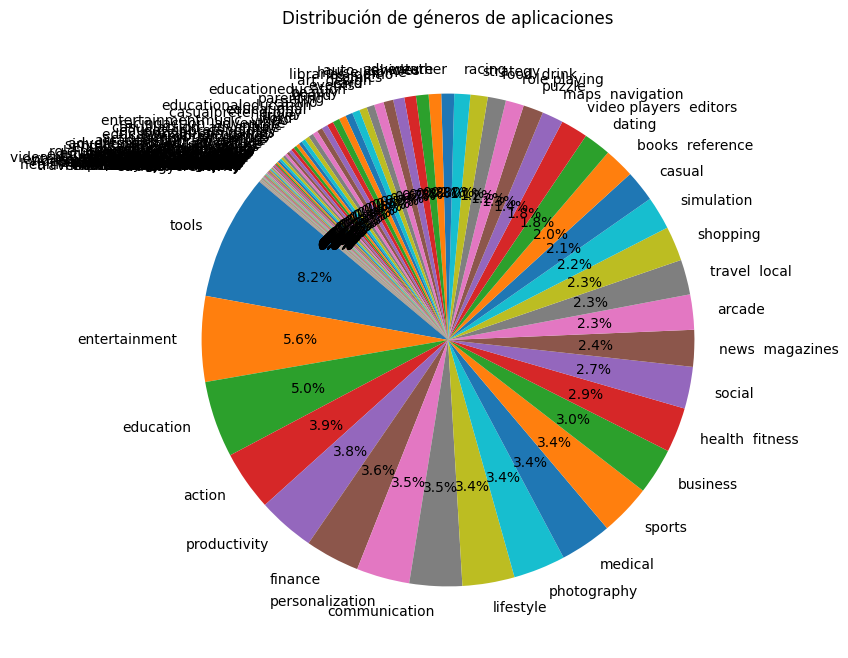
0.7.10 Content rating column
df['Content Rating'].unique()array(['Everyone', 'Teen', 'Everyone 10+', 'Mature 17+',
'Adults only 18+', 'Unrated'], dtype=object)df['Content Rating'].value_counts() / len(df['Content Rating'])Content Rating
Everyone 0.797908
Teen 0.114935
Mature 17+ 0.046221
Everyone 10+ 0.040486
Adults only 18+ 0.000337
Unrated 0.000112
Name: count, dtype: float64Mostramos los valores unicos de la columna Content Rating, al igual podemos observar la cantidad de coincidencias de cada valor unico entre todas las muestras, dejando a Everyone con mas del 80% de coincidencias, luego a Teen con un 10%, Solo 2 no estaban calificadas y 2 con contenido para mayores de 18 años.
plt.figure(figsize=(6,6))
df['Content Rating'].value_counts().plot(kind='pie', autopct='%1.1f%%', startangle=140)
plt.title('Distribución de géneros de aplicaciones')
plt.ylabel('')
plt.show()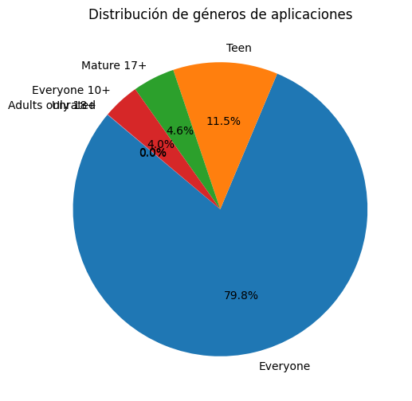
0.8 Bivariate analysis
def scatters(col1, col2):
# Create a scatter plot using Seaborn
plt.figure(figsize=(8, 4)) # Adjust the figure size as needed
scatterplot(data=df, x=col1, y=col2, hue="Type")
plt.title(f'Grafica de dispersión {col1} vs {col2}')
plt.xlabel(col1)
plt.ylabel(col2)
plt.show()top_10_installs = df.groupby(['App', 'Category'])['Installs'].sum().sort_values(ascending=False).head(10)
plt.figure(figsize=(10, 4))
top_10_installs.plot(kind='barh', color='skyblue')
plt.xlabel('Total de Instalaciones')
plt.ylabel('Aplicación - Categoría')
plt.title('Top 10 aplicación y categoria')
plt.gca().invert_yaxis() # Invertir el eje y para que las barras más grandes estén arriba
plt.show()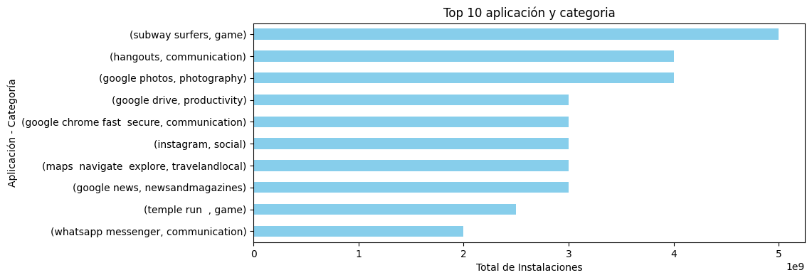
En la grafica podemos observar la aplicación y la categoria con mayor numero de instalaciones.
top_10_prices = df.groupby('Category')['Price'].sum().sort_values(ascending=False).head(10)
plt.figure(figsize=(10, 4))
top_10_prices.plot(kind='bar', color='salmon')
plt.xlabel('Categoría')
plt.ylabel('Precio Total')
plt.title('Top 10 de Categorías por Precio Total')
plt.xticks(rotation=45, ha='right') # Rotar las etiquetas del eje x para mayor claridad
plt.show()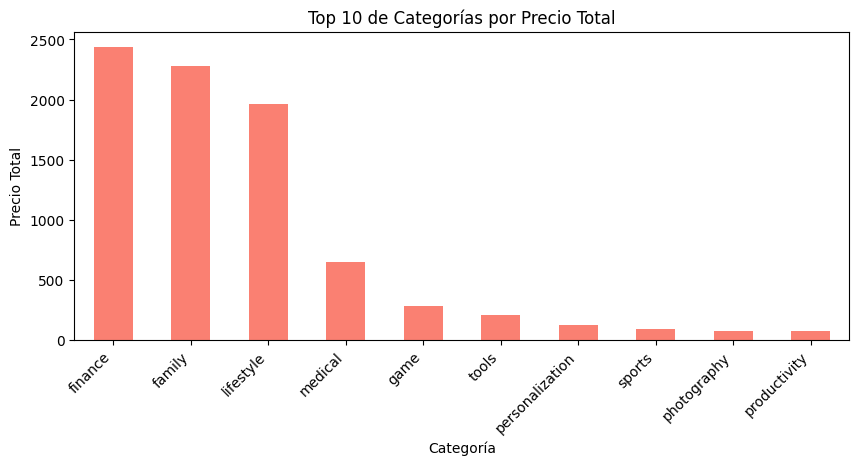
Podemos ver 10 muestras de las categorias las cuales cuentan con el mayor precio pagado por la aplicacion, siendo FINANCE la categoria la cual mas dinero se gasta.
top_10_ratings = df.groupby('Category')['Rating'].sum().sort_values(ascending=False).head(10)
plt.figure(figsize=(10, 4))
top_10_ratings.plot(kind='bar', color='skyblue')
plt.xlabel('Categoría')
plt.ylabel('Suma de Calificaciones')
plt.title('Top 10 de Categorías por Suma de Calificaciones')
plt.xticks(rotation=45, ha='right') # Rotar las etiquetas del eje x para mayor claridad
plt.show()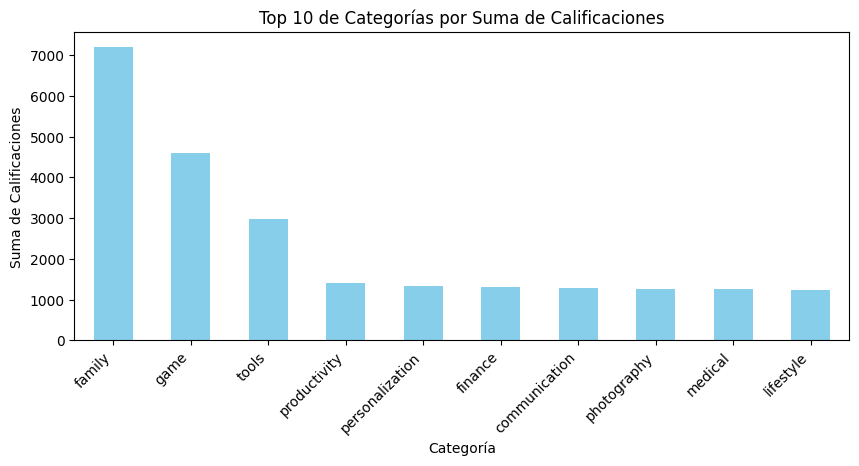
Observemos las 10 primeras muestras de las categorias las cuales tienen mayor puntaje, siendo FAMILY la categoria la cual contiene mas numero de calificaciones
top_10_reviews = df.groupby(['App', 'Category'])['Reviews'].max().sort_values(ascending=False).head(10)
plt.figure(figsize=(10, 4))
top_10_reviews.plot(kind='barh', color='skyblue')
plt.xlabel('Número Máximo de Reseñas')
plt.ylabel('Aplicación - Categoría')
plt.title('Top 10 de Aplicaciones-Categorías por Número Máximo de reseñas')
plt.gca().invert_yaxis() # Invertir el eje y para que la barra más larga esté arriba
plt.show()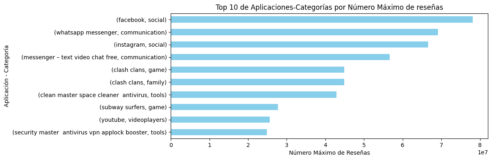
Acá podemos observar las aplicaciones y su categoria, las cuales cuentan con mayor numero de reseñas
plt.figure(figsize=(10, 6)) # make figure size
barplot(x='Content Rating', y='Installs', hue="Type", data=df)
plt.title('Distribución de calificación de contenido')
plt.xlabel('Categorias de contenido')
plt.ylabel('Num de instalaciones')
plt.show()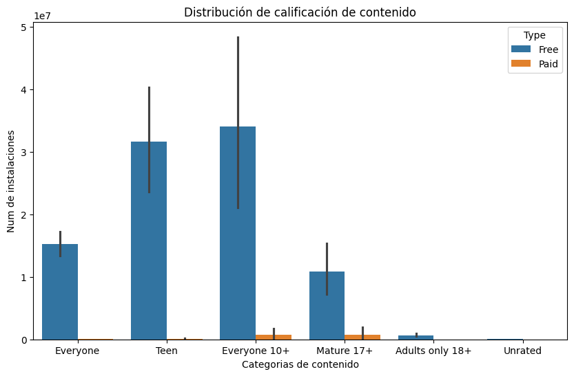
Con esta grafica podemos ver que aquellas aplicaciones de categoria Everyone 10+ son las que mas cuentan con numero de instalaciones
plt.figure(figsize=(12,4))
barplot(x='App',y='Rating',data=df[df['Type']=='Free'].sort_values(by='Genres',ascending=True).head(5))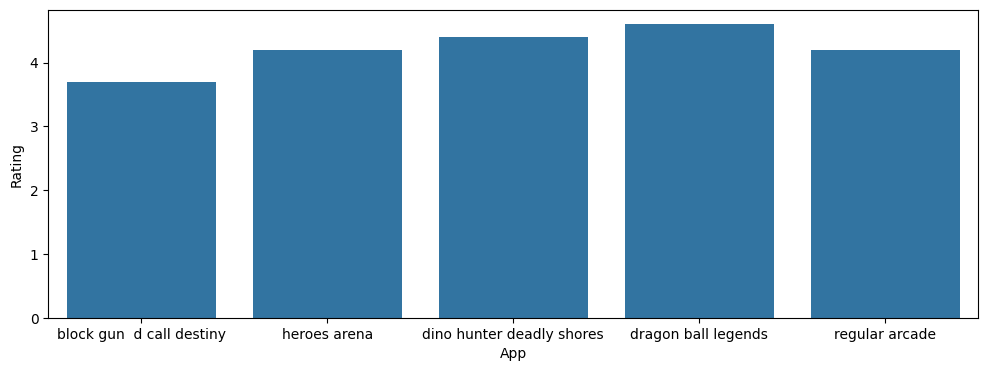
Especificamos nuestros ejes X(App) y Y(Rating), luego se seleccionan solo las filas donde el valor en la columna ‘Type’ es ‘Free’y lo ordenamos de forma ascendente, muestra un gráfico de barras que representa las clasificaciones (’Rating’) de las 5 aplicaciones (‘App’) con el valor ‘Free’ en la columna ‘Type’, ordenadas según la columna ‘Genres’.
scatters('Size_in_MBs', 'Rating')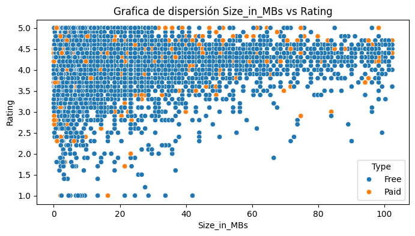
scatters('Reviews', 'Rating')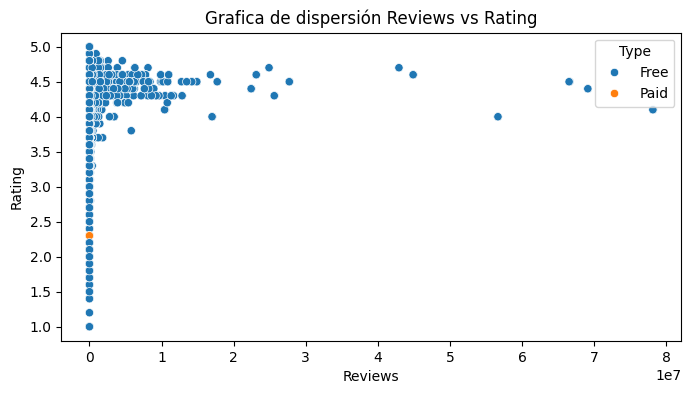
Como hemos indicado anteriormente, las aplicaciones con mejor valoración tienden a tener mayor numero de reseñas.
0.9 Conclusion analysis
Como pudimos observar llevamos a cabo numerosas tecnicas para poder representar de mejor manera el valor de los datos, a continuación comentaré sobre algunos puntos importantes del analisis:
La columna Rating nos indica que la mayoria de las aplicaciones cuentan con buenas calificaciones departe de sus usuarios.
Las aplicaciones mejor calificadas estan en Familiar, son juegos los que se encuentran en primer lugar, pero estan catalogadas en el dataset como Family
Las aplicaciones con mayor numero de reseñas y por ende de instalaciones, cinco puestos son aplicaciones de redes sociales, facebook de primero por ejemplo, seguido de apliciones de juegos
En su gran mayoria las aplicaciones son gratuitas, ya que entran en categoria de redes sociales, juegos y familiares; Por otro lado, las aplicaciones pagas apuntan a finanzas y herramientas, serian corporaciones, negocios, emprendimientos, etc.
Las aplicaciones preinstaladas pueden tener cifras de instalaciones muy altas no necesariamente debido a su popularidad o calidad, sino porque vienen por defecto en los dispositivos, por ejemplo google photos, google maps, etc.
0.10 Pre processing
0.10.1 Label encoder
le = LabelEncoder()
for col in df.columns:
if df[col].dtype == 'object':
le.fit_transform(list(df[col].values))
df[col] = le.transform(df[col].values)
elif df[col].dtype == 'category':
le.fit_transform(list(df[col].values))
df[col] = le.transform(df[col].values)Mediante este bucle for, iteramos entre las columnas identificando aquellas que sean Object y Category, posterior a eso cada columna indentificada le aplicaremos Label Encoder para asignarle un valor numerico a cada una de los valores categoricos.
df.head()| App | Category | Rating | Reviews | Size_in_MBs | Installs | Type | Price | Content Rating | Genres | Last Updated | Current Ver | Android Ver | Reviews_per_Install | |
|---|---|---|---|---|---|---|---|---|---|---|---|---|---|---|
| 0 | 5942 | 0 | 4.1 | 159 | 19.46 | 10000 | 0 | 0.0 | 1 | 9 | 527 | 107 | 14 | 0.015900 |
| 1 | 2035 | 0 | 3.9 | 967 | 14.34 | 500000 | 0 | 0.0 | 1 | 11 | 450 | 952 | 14 | 0.001934 |
| 2 | 7481 | 0 | 4.7 | 87510 | 8.91 | 5000000 | 0 | 0.0 | 1 | 9 | 106 | 424 | 14 | 0.017502 |
| 3 | 6748 | 0 | 4.5 | 215644 | 25.60 | 50000000 | 0 | 0.0 | 4 | 9 | 778 | 2582 | 17 | 0.004313 |
| 4 | 6002 | 0 | 4.3 | 967 | 2.87 | 100000 | 0 | 0.0 | 1 | 10 | 712 | 250 | 19 | 0.009670 |
plt.figure(figsize=(10,6))
plt.title("Correlation of Seven Columns")
heatmap(df.corr(),annot=True)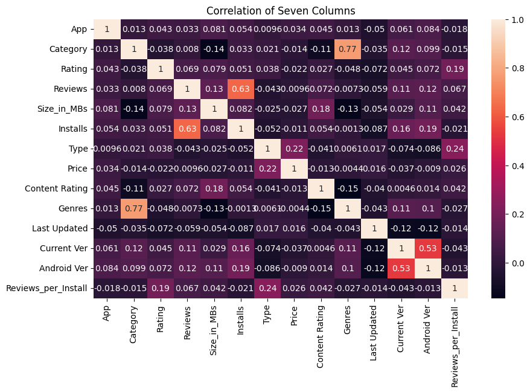
0.10.2 Scaler
df['Reviews_per_Install'] = log1p(df['Reviews_per_Install'])
df['Price'] = log1p(df['Price'])
s_scaler = StandardScaler()
r_scaler = RobustScaler()
df['Reviews'] = r_scaler.fit_transform(df[['Reviews']])
df['Installs'] = r_scaler.fit_transform(df[['Installs']])
df['Size_in_MBs'] = s_scaler.fit_transform(df[['Size_in_MBs']])Aplicaremos diferentes tecnicas de escalamiento para nuestros features numericos: - Transformacion logaritmica para aquellas columnas con distribuciones sesgadas.
Standar scaler para aquellas columnas con menos presencia de outliers
Robust scaler para aquellas columnas con mayor fuerte presencia de outliers.
df.head()| App | Category | Rating | Reviews | Size_in_MBs | Installs | Type | Price | Content Rating | Genres | Last Updated | Current Ver | Android Ver | Reviews_per_Install | |
|---|---|---|---|---|---|---|---|---|---|---|---|---|---|---|
| 0 | 5942 | 0 | 4.1 | -0.064069 | -0.174887 | -0.098196 | 0 | 0.0 | 1 | 9 | 527 | 107 | 14 | 0.015775 |
| 1 | 2035 | 0 | 3.9 | -0.052705 | -0.408409 | 0.000000 | 0 | 0.0 | 1 | 11 | 450 | 952 | 14 | 0.001932 |
| 2 | 7481 | 0 | 4.7 | 1.164449 | -0.656071 | 0.901804 | 0 | 0.0 | 1 | 9 | 106 | 424 | 14 | 0.017351 |
| 3 | 6748 | 0 | 4.5 | 2.966545 | 0.105158 | 9.919840 | 0 | 0.0 | 4 | 9 | 778 | 2582 | 17 | 0.004304 |
| 4 | 6002 | 0 | 4.3 | -0.052705 | -0.931555 | -0.080160 | 0 | 0.0 | 1 | 10 | 712 | 250 | 19 | 0.009624 |
1 Machine Learning
1.1 Train Test data
df.columnsIndex(['App', 'Category', 'Rating', 'Reviews', 'Size_in_MBs', 'Installs',
'Type', 'Price', 'Content Rating', 'Genres', 'Last Updated',
'Current Ver', 'Android Ver', 'Reviews_per_Install'],
dtype='object')X = df.drop(columns=['Rating', 'App', 'Category','Reviews', 'Installs', 'Content Rating', 'Genres', 'Last Updated', 'Android Ver', 'Current Ver', ])
y = df['Rating']X_train, X_test, y_train, y_test = train_test_split(X,
y,
test_size=0.2,
random_state=760,
)Definimos nuestras variables X y y para llevar a cabo el train test split dividir nuestro dataset en conjunto de prueba y entrenamiento y luego observamos como queda nuestros conjuntos.
1.2 Regression models
1.3 Ensembling
1.3.1 Bagging regressor
Viene de la palabra bootstrap aggregation. Este método requiere que haya varios algoritmos corriendo en paralelo: cada uno seleccionará el modelo que mejor desempeño tenga y, al final, al juntar los distintos modelos que se han armado, se seleccionará aquel con «más votos» o el que seleccione algún algoritmo de ciencia de datos.
model_bg = BaggingRegressor(estimator=DecisionTreeRegressor(max_depth=6,
criterion='squared_error',
min_samples_split=2,
),
n_estimators= 200,
random_state= 760).fit(X_train, y_train)model_bg_pred = model_bg.predict(X_test)
mse = mean_squared_error(y_test, model_bg_pred)
r2_bg = r2_score(y_test, model_bg_pred)
print("Mean Squared Error (MSE):", mse)
print("R-squared (R2):", r2_bg)Mean Squared Error (MSE): 0.23640877262451265
R-squared (R2): 0.11101003848301183Como estimador para nuestros metaestimadores es DecisionTreeRegressor, entrenamos con nuestros conjuntos de entrenamiento y de prueba; Definimos nuestra variable de predicción y evaluamos con la metrica r2 arrojando un 0.12%, a pesar de modificar numerosas veces los hiperparametros.
1.3.2 Boosting
Es una técnica de ensamble en aprendizaje automático en la cual varios modelos débiles son entrenados para combinarse y producir un modelo más fuerte, la idea detrás del boosting es que cada modelo débil corrige los errores cometidos por los modelos anteriores en el ensamble, lo que finalmente conduce a un modelo más preciso.
model_gbr = GradientBoostingRegressor(n_estimators=180,
random_state= 760,
loss='squared_error',
).fit(X_train, y_train)model_gbr_pred = model_gbr.predict(X_test)
mse = mean_squared_error(y_test, model_gbr_pred)
r2_gbr = r2_score(y_test, model_gbr_pred)
print("Mean Squared Error (MSE):", mse)
print("R-squared (R2):", r2_gbr)Mean Squared Error (MSE): 0.23172129085091106
R-squared (R2): 0.1286368134764435Mejorando el primer metaestimador con GradientBoostingRegressor con un 0.12% de desempeño, mejor que el primer metaestimador por poco, aunque muy bajo de igual manera.
1.3.3 Bayes search
La búsqueda bayesiana utiliza la técnica de optimización bayesiana para modelar el espacio de búsqueda para llegar a valores de parámetros optimizados lo antes posible; El enfoque de búsqueda de Bayes utiliza los resultados de evaluaciones anteriores para muestrear nuevos candidatos que tienen más probabilidades de dar mejores resultados.
search_spaces = {
'max_depth': Integer(1, 20), # Profundidad máxima del árbol
'min_samples_split': Integer(2, 20), # Número mínimo de muestras requeridas para dividir un nodo interno
'min_samples_leaf': Integer(1, 20), # Número mínimo de muestras requeridas para ser una hoja
'max_features': Real(0.1, 1.0), # Fracción de características a considerar en cada división
'splitter': ['best', 'random'] # Estrategia utilizada para elegir la división en cada nodo
}# Realizamos una búsqueda utilizando el algoritmo de optimización bayesiana de skopt:
n_iter_search = 20
bayes_search = BayesSearchCV(
DecisionTreeRegressor(), # Modelo de Decision Tree Regressor
search_spaces, # Espacios de búsqueda para los parámetros
n_iter=n_iter_search, # Número de iteraciones de búsqueda
cv=5, # Número de folds en la validación cruzada
verbose=1 # Nivel de detalle durante el proceso de búsqueda
)
# Entrenamos el modelo a los datos de entrenamiento:
bayes_search.fit(X_train, y_train)
bayes_search.best_estimator_Fitting 5 folds for each of 1 candidates, totalling 5 fits
Fitting 5 folds for each of 1 candidates, totalling 5 fits
Fitting 5 folds for each of 1 candidates, totalling 5 fits
Fitting 5 folds for each of 1 candidates, totalling 5 fits
Fitting 5 folds for each of 1 candidates, totalling 5 fits
Fitting 5 folds for each of 1 candidates, totalling 5 fits
Fitting 5 folds for each of 1 candidates, totalling 5 fits
Fitting 5 folds for each of 1 candidates, totalling 5 fits
Fitting 5 folds for each of 1 candidates, totalling 5 fits
Fitting 5 folds for each of 1 candidates, totalling 5 fits
Fitting 5 folds for each of 1 candidates, totalling 5 fits
Fitting 5 folds for each of 1 candidates, totalling 5 fits
Fitting 5 folds for each of 1 candidates, totalling 5 fits
Fitting 5 folds for each of 1 candidates, totalling 5 fits
Fitting 5 folds for each of 1 candidates, totalling 5 fits
Fitting 5 folds for each of 1 candidates, totalling 5 fits
Fitting 5 folds for each of 1 candidates, totalling 5 fits
Fitting 5 folds for each of 1 candidates, totalling 5 fits
Fitting 5 folds for each of 1 candidates, totalling 5 fits
Fitting 5 folds for each of 1 candidates, totalling 5 fitsDecisionTreeRegressor(max_depth=10, max_features=0.9768167135593062,
min_samples_leaf=7, min_samples_split=11,
splitter='random')In a Jupyter environment, please rerun this cell to show the HTML representation or trust the notebook. On GitHub, the HTML representation is unable to render, please try loading this page with nbviewer.org.
DecisionTreeRegressor(max_depth=10, max_features=0.9768167135593062,
min_samples_leaf=7, min_samples_split=11,
splitter='random')bayes_pred = bayes_search.predict(X_test)
mse = mean_squared_error(y_test, bayes_pred)
r2_bayes = r2_score(y_test, bayes_pred)
print("Mean Squared Error (MSE):", mse)
print("R-squared (R2):", r2_bayes)Mean Squared Error (MSE): 0.23477272841009586
R-squared (R2): 0.11716220816380685Luego de aplicar la busqueda Bayesiana y de escoger los mejores parametros, observamos mediante la metrica r2 el desempeño del 0.11%, bastante bajo
1.3.4 TPOT
TPOT, que significa Tree-based Pipeline Optimization Tool, es una biblioteca de Python que automatiza el proceso de construcción de modelos de aprendizaje automático. Utiliza algoritmos genéticos para buscar automáticamente las mejores combinaciones de preprocesamiento de datos y modelos de aprendizaje automático
tpot_reg = TPOTRegressor(
generations=4, # Número de generaciones para evolucionar los modelos
population_size=10, # Tamaño de la población de modelos en cada iteración
verbosity=2, # Nivel de detalle durante el proceso de entrenamiento
offspring_size=100, # Tamaño de la prole en cada iteración
scoring='r2', # Métrica para evaluar los modelos
cv=5 # Número de folds en la validación cruzada
)
tpot_reg.fit(X_train, y_train)
Generation 1 - Current best internal CV score: 0.10940974462091754
Generation 2 - Current best internal CV score: 0.10940974462091754
Generation 3 - Current best internal CV score: 0.11067750123940263
Generation 4 - Current best internal CV score: 0.11103621205110092
Best pipeline: ExtraTreesRegressor(RidgeCV(input_matrix), bootstrap=True, max_features=1.0, min_samples_leaf=17, min_samples_split=11, n_estimators=100)TPOTRegressor(generations=4, offspring_size=100, population_size=10,
scoring='r2', verbosity=2)In a Jupyter environment, please rerun this cell to show the HTML representation or trust the notebook. On GitHub, the HTML representation is unable to render, please try loading this page with nbviewer.org.
TPOTRegressor(generations=4, offspring_size=100, population_size=10,
scoring='r2', verbosity=2)best_model = tpot_reg.fitted_pipeline_tpot_pred = tpot_reg.predict(X_test)
mse = mean_squared_error(y_test, tpot_pred)
r2_tpot = r2_score(y_test, tpot_pred)
print("Mean Squared Error (MSE):", mse)
print("R-squared (R2):", r2_tpot)Mean Squared Error (MSE): 0.2306561911141652
R-squared (R2): 0.1326420073762713/usr/local/lib/python3.10/dist-packages/sklearn/base.py:493: UserWarning: X does not have valid feature names, but RidgeCV was fitted with feature names
warnings.warn(Mediante el TPOT en este caso para un problema de regresión, entrenamos con nuestros conjuntos de prueba y entrenamiento, nos arroja un desempeño mediante la metrica r2 con casi un 13%, uno de los desempeños mas altos siendo igual bastante bajo.
1.4 Classification
No tuvimos buenos resultados mediante un problema de regresión, hare unas pruebas pero de clasificación
y_train_int = y_train.astype(int)
y_test_int = y_test.astype(int)Primero los conjuntos de entrenamiento y de prueba hay que convertirlos a valores enteros
1.4.1 Random forest classifier
rf_clf = RandomForestClassifier(max_depth=2,)
rf_clf.fit(X_train, y_train_int)RandomForestClassifier(max_depth=2)In a Jupyter environment, please rerun this cell to show the HTML representation or trust the notebook.
On GitHub, the HTML representation is unable to render, please try loading this page with nbviewer.org.
RandomForestClassifier(max_depth=2)
rfc_pred = rf_clf.predict(X_test)
as_rfc = accuracy_score(y_test_int, rfc_pred)
print("Accuracy:", as_rfc)Accuracy: 0.7492973580663294Usaremos bosque aleatorio como primer modelo de clasificación, definimos la variable de predicción y imprimimos la precisión del modelo
1.4.2 Bagging Classifier
model_bc = BaggingClassifier(estimator=DecisionTreeClassifier(max_depth=3,
),
n_estimators= 100,
random_state= 760).fit(X_train, y_train_int)bc_pred = model_bc.predict(X_test)
bg_as = accuracy_score(y_test_int, bc_pred)
print("Accuracy:", bg_as)Accuracy: 0.7492973580663294Usaremos dos de los mismos metodos de Ensembling, primeramente el BaggingCLassifier, usando arbol de decisión como estimador, definimos la variable predictora y imprimimos la precisión
1.4.3 Boosting classifier
model_gbc = GradientBoostingClassifier(n_estimators=100,
random_state= 760,
criterion='squared_error',
).fit(X_train, y_train_int)gbc_pred = model_gbc.predict(X_test)
as_gbc = accuracy_score(y_test_int, gbc_pred)
print("Accuracy:", as_gbc)Accuracy: 0.7436762225969646Por ultimo el Boosting, modifico un poco los hiperparametros y luego imprimimos la precisión
1.5 Comparative model
# Define los nombres de los modelos y sus puntajes de rendimiento
model_names = ['Regressor Bagging', 'Regressor Boosting', 'Regressor bayer search', 'Regressor TPOT', 'Classifier Random forest', 'Classifier Bagging', 'Classifier Boosting']
performance_scores = [r2_bg, r2_gbr, r2_bayes, r2_tpot, as_rfc, bg_as, as_gbc]
plt.figure(figsize=(16, 4))
plt.bar(model_names, performance_scores, color='skyblue')
plt.xlabel('Modelos')
plt.ylabel('Puntaje de rendimiento')
plt.title('Comparación del rendimiento de diferentes modelos de aprendizaje automático')
# Muestra la gráfica
plt.show()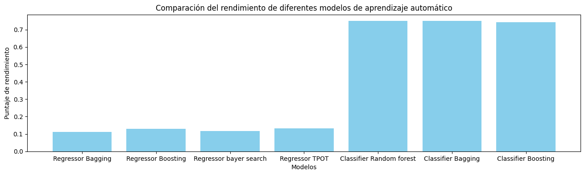
Acá graficamos los desempeños de los modelos ya sea de regresión y clasificación y comparamos, claramente tenemos un mejor desempeño en nuestros modelos de clasificación, con mas del 70% de precisión.
1.6 Make prediction
y_pred = model_gbc.predict(X_test)
df_comparison = DataFrame({'Predicción': y_pred, 'Valor real': y_test_int})
df_comparison.head(10)| Predicción | Valor real | |
|---|---|---|
| 10159 | 4 | 2 |
| 10310 | 4 | 4 |
| 10778 | 4 | 4 |
| 3574 | 3 | 4 |
| 9219 | 4 | 3 |
| 9760 | 4 | 4 |
| 8640 | 4 | 4 |
| 1473 | 4 | 4 |
| 8723 | 4 | 4 |
| 1697 | 4 | 4 |
Definimos un nuevo dataframe de comparación entre el valor real y el valor predicho
1.7 Save model
path = 'model_best.joblib'
joblib.dump(model_gbc, path)['model_best.joblib']Acá guardamos nuestro modelo con mejor desempeño en nuestro computador y poder implementarlo en la industria